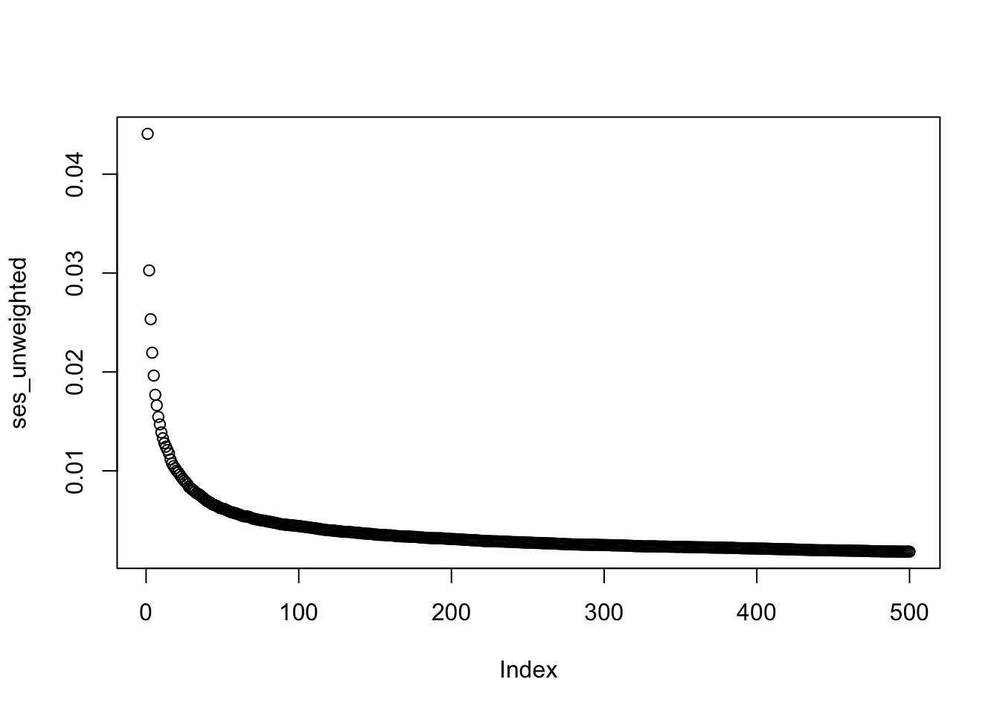

library(simulateGP)
geno1 <- make_geno(10000, 500, 0.5)
b <- choose_effects(500, 0.3)
x1 <- make_phen(b, geno1)
y1 <- make_phen(0.4, x1)
geno2 <- make_geno(1000, 500, 0.5)
x2 <- make_phen(b, geno2)
y2 <- make_phen(0.4, x2)
bhat <- gwas(x1, geno1)
b_unweighted <- sign(b)Simulation study
Standard unweighted PRS analysis
prs_unweighted <- geno2 %*% b_unweighted
summary(lm(x2 ~ prs_unweighted))
Call:
lm(formula = x2 ~ prs_unweighted)
Residuals:
Min 1Q Median 3Q Max
-2.8477 -0.6214 0.0136 0.6042 3.2181
Coefficients:
Estimate Std. Error t value Pr(>|t|)
(Intercept) -0.429180 0.041691 -10.29 <2e-16 ***
prs_unweighted 0.026133 0.001833 14.26 <2e-16 ***
---
Signif. codes: 0 '***' 0.001 '**' 0.01 '*' 0.05 '.' 0.1 ' ' 1
Residual standard error: 0.912 on 998 degrees of freedom
Multiple R-squared: 0.1692, Adjusted R-squared: 0.1683
F-statistic: 203.2 on 1 and 998 DF, p-value: < 2.2e-16Meta analysing per-SNP PRS scores
library(meta)Loading 'meta' package (version 6.0-0).
Type 'help(meta)' for a brief overview.
Readers of 'Meta-Analysis with R (Use R!)' should install
older version of 'meta' package: https://tinyurl.com/dt4y5drso <- sapply(1:ncol(geno2), function(i)
{
prs_unweighted <- geno2[,i] * b_unweighted[i]
summary(lm(x2 ~ prs_unweighted))$coef[2,1:2]
})
metafor::rma(yi=o[1,], sei=o[2,], method="EE")
Equal-Effects Model (k = 500)
I^2 (total heterogeneity / total variability): 22.25%
H^2 (total variability / sampling variability): 1.29
Test for Heterogeneity:
Q(df = 499) = 641.7790, p-val < .0001
Model Results:
estimate se zval pval ci.lb ci.ub
0.0260 0.0020 12.9879 <.0001 0.0221 0.0299 ***
---
Signif. codes: 0 '***' 0.001 '**' 0.01 '*' 0.05 '.' 0.1 ' ' 1Standard errors with number of SNPs
ses_unweighted <- sapply(1:ncol(geno2), function(i)
{
prs_unweighted <- geno2[,1:i, drop=FALSE] %*% b_unweighted[1:i]
summary(lm(x2 ~ prs_unweighted))$coef[2,2]
})
plot(ses_unweighted)